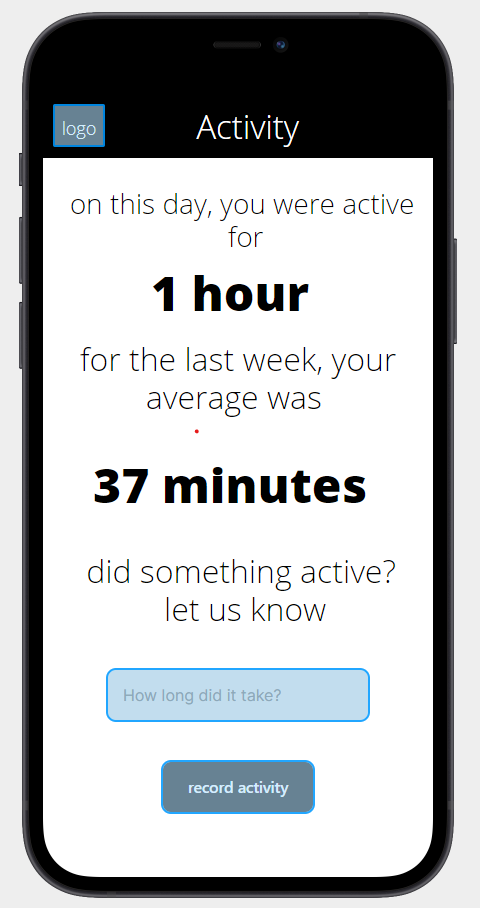

Introduction
(Click on Images to Enlarge them)
Given the unfortunate reality that is the covid stricken world that we currently live in, the average person in North America has had basically no choice but to significantly increase their usage of the internet. Unfortunately, mental and physical health has been a problem in North American society for decades, and obligating people to spend so much more time isolated, in a chair, and in front of a screen is only going to make it a lot worse. It has now become more important than ever that a tool that mitigates the prevalence and severity of the issues associated with increases in screen time be created and offered to the public.
Research
Context
Being constantly stressed, isolated, and being inactive can, and most probably will, take a toll on your mental and physical well being. Since we are living through a pandemic, you would expect the average physical and mental well being of the average adult to have suffered, and you'd be completely right. In June 2020, 40% of American adults reported struggling with mental health and substance abuse (Czeisler). Also, during a study that took place between March and May 2020, it was found that approximately one third of adults reported shorter exercise durations, and one third also reported lower exercise intensity (Brand).
Currently, there are apps like Myfitnesspal, Sworkit, or Runkeeper that can track your caloric intake and your activity frequency, and apps like Headspace, Meditopedia, or Calm that can plan and track your meditation habits. There are many apps like these, with narrow functional reach, in today's market. For a user to track their meditation habits, their caloric intake, and their daily screen time, they would have to download and simultaneously use 3 different applications on a daily basis. Not only is this inefficient, but it is also ineffective in that it is more difficult for a user to manage the use of all applications necessary for complete monitoring of metrics relevant to physical and mental well being. With TrackiT, we want it to be easy to be well.
We are addressing exactly what is lacking from the market; an application that can allow for varied and customizable functionality, through modularization of primary functions into what we like to call TrackiTs, that then allow for a holistic and comprehensive accommodation of the needs of the user in regards to their well being. We aim to use as many relevant vectors as possible to address, monitor, and "Track" all significant behavioral deficiencies a user may be exhibiting that lead to a lower quality of life. With TrackiT, your home for all behavioral metrics associated with your well being, you can find all the functionality you need to live a mentally, spiritually, and physically healthy life in a single application.
Surveys
We conducted a simple survey of our potential clients with the most pertinent results being shown below.
Given the results of this survey, it is quite clear that it is unlikely that people are willing to download and interact with numerous applications in order to maintain a healthy lifestyle. This paired with the reality that most people only having a single application related to wellness, and the fact that no single app currently on the market manages to exhibit all functions necessary for the holistic monitoring of practices linked to general well being, we can conclude that most people are not managing to successfully manage their wellness habits through the usage of mobile applications.
The results of this survey has concluded that most people do not use their applications as often as they are supposed to, and we believe that this must be due to the fact that applications currently on the market are not nearly simple enough to use for most people to feel comfortable using them on a daily basis. This is why we have designed TrackiT with simplicity as one of the most important aspects of the application.
As is displayed by this graph, usage of wellness applications can significantly improve the state of your well being. At TrackiT, we want to improve the lives of our users, and we believe that the simple-to-use and welcoming user interface will allow for most of our users to find it extremely easy to use the application every single day.
Analysis
Personas & Journey Maps


|
|---|

Design Process
Sketches
At the sketching stage, the main aspect of design that was focused on was the information that would be displayed on each page, and making it so that critical information and functionality would be easy to access, and displayed in a fashion that is clear and clutter free. The objective was to sketch a user interface that would allow the user frictionless access to the primary information and functions of the application.
Wireframes & User Flow
With the wireframe and user flow design, navigation through the application was of main concern. After the sketches, the means in which relevant information would be displayed had already been determined, but now, most thought was placed into what navigation sequences would allow for the most efficient use of the application. As is shown, immediately after a user signs in, they are greeted with buttons that will lead him immediately to all of the TrackiT information about his wellness activities over a given period of time. After being presented with this information, a user can edit the data being presented simply by tapping the location where the information is presented on the screen, and input any new data that they would like. For example, a workout that they have just finished, or a meditation session that they had just completed. We wanted navigation through the application to feel seamless, so that users would feel no obstacles between them and the Tracking of their wellness habits.
|  | ||
Palette
Initial Proposals
All team members came up with their own proposals for the colour palette. The first can be seen to have soft warm colours where the browns clash with the creamy soft remaining colours giving the feeling of summer and warm temperatures. The second can be seen to have more energetic and deep colours. while they are still are soft in nature they bring more life and bring a more festive attitude.

Final Palette
By taking aspects of both we arrived at the final palette below. Here, the theme of creamy soft colours is continued. With the current pandemic, winter season and fitness purpose of this application, we really wanted something warm, easy to look at and that lifts the user's spirits.

Typography
|
We chose Open Sans as our font for the application due to its frequent use adding some familiarity for the user. It's simplistic and clean look provides a minimalistic yet soft design. It's popularity as one of the most popular Google Fonts also means that it is a web safe font optimized for any use we may need it for. |

|
Logo
|
|
Following the preceding themes, set up by all design decisions made up to this point, our logo is both simplistic and clean. A simple play on words to get the double T to pop out, leaving something distinctive and to be remembered by it's users. |
Final Design
At this point, the content of each page and the navigation through the pages had already been decided, so the main focus was the aesthetic of the application. We had chosen to implement the color pallet in a way so that more dynamic or active components were colored with richer and more vibrant colors. For example, our buttons being a deep orange. The same logic holds for less active or more static components, like the app bar at the top being a light beige/grey color. What was also implemented during this stage of the design process was all the icons and the addition of the logo at the top left corner of the screen. The logo choice is discussed elsewhere in this document, and the choice of the icons was based on choosing images that have colors that would complement the color pallet found everywhere else in the application, and styling that was cool and comfortable, as to further support the welcoming and soothing appearance of the application.
Conclusion
Based on a problem many of us are facing today, this UX project provided an interesting and creative way of learning more on the subject. It also gave us the opportunity to create a real practical solution to the problem ourselves. For one of the first times we engaged in the design process towards a real applicable solution to the problem that we face. Taking the theory we've learned in class and in tutorials this project allowed us to truly feel like we can use the knowledge we've observed to create something of use and worth.